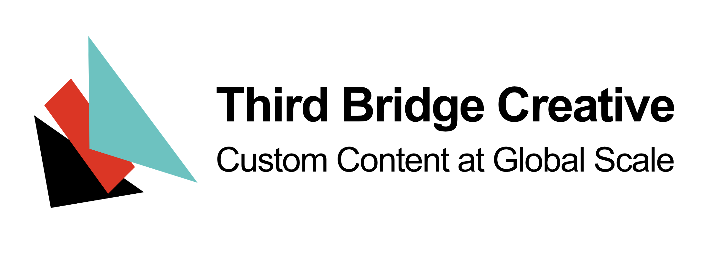

A curated homepage for music writing — culled from over 500 publications and delivered Monday, Wednesday, and Friday. We hope you enjoy.
Welcome to the new Sound Signal. Our goal is to curate and amplify the best music writing on the internet every Monday, Wednesday, and Friday. Sound Signal is published by Third Bridge Creative, a global network of cultural creatives that builds playlists, radio stations, podcasts, and short-form editorial for hundreds of millions of end users.
Sound Signal is an expression of how we and our community view culture. It's our own homepage for music — and it's supposed to be a fun hang. The last thing the world needs is another dashboard.
It's a natural evolution for the Sound Signal brand. Since 2023, we focused primarily on identifying what was happening in the emerging music space — the tracks, artists, and trends that defined culture today and tomorrow.
We wanted to expand the remit a bit, and look at the larger culture. It's a weird time for cultural writing. The good stuff is scant in mainstream publications, but there's arguably more solid work than ever thanks to self-publishing platforms like Substack and Ghost.
The best writing has gone underground, and there's a liberation and honesty that comes with being unshackled from the strictures of corporate media. It's okay to be weird again, and you might even find an audience of people who are weird like you.
For those of us without a lot of spare time (read: most of us), finding the brilliant needles in the haystack can be frustrating. You could spend hours every morning searching, and still miss great, important writing.
Every Monday, Wednesday and Friday, the system we've set up scans hundreds of publications, conducts open web searches, and scrolls through various RSS feeds. An architecture of content taxonomies, taste filters, voice profiles, and scoring criteria identifies what's interesting — and what's not.
If you want a carefully selected feed of new stories each week, that's the whole product.

Curating and designing content systems has been central to our work at Third Bridge Creative, and this new site is no different. If you want to learn more about the nuts & bolts of the system, follow us here. Any other questions, please reach out to us at info@thirdbridgecreative.com.